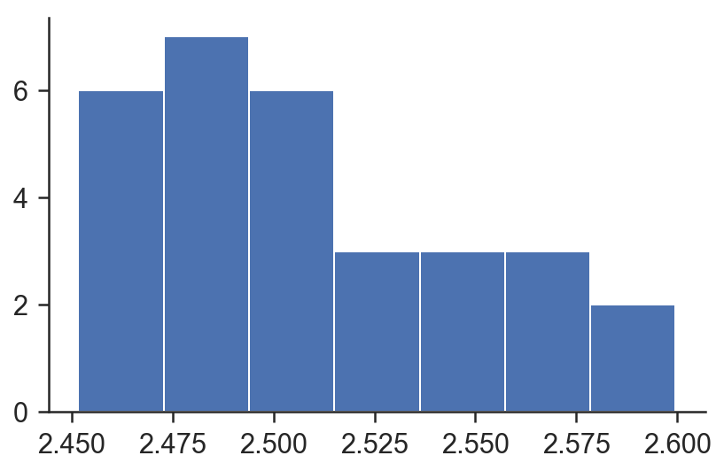
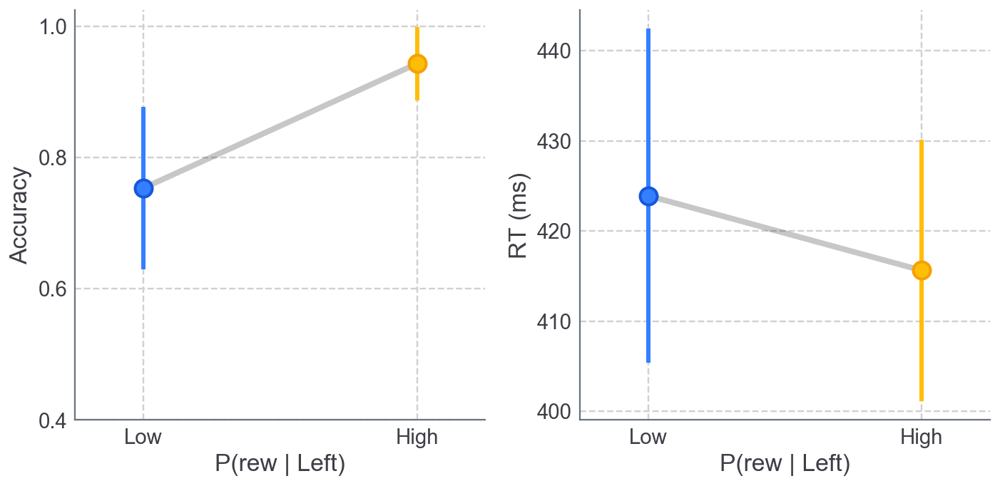
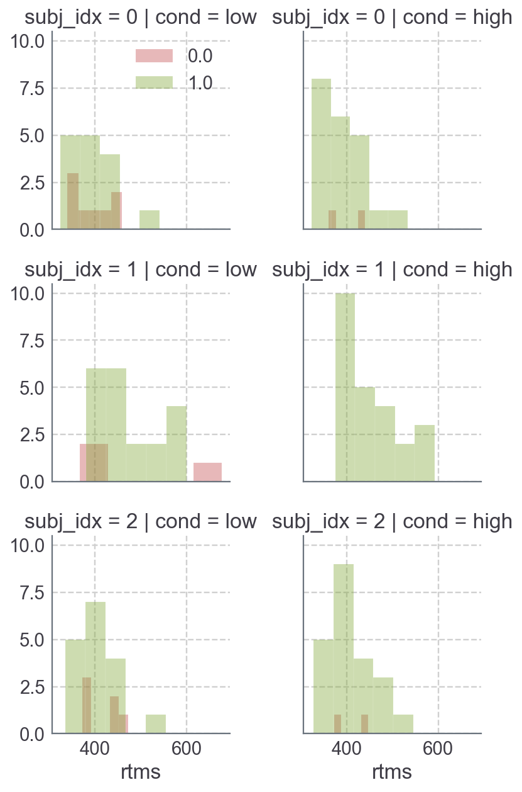
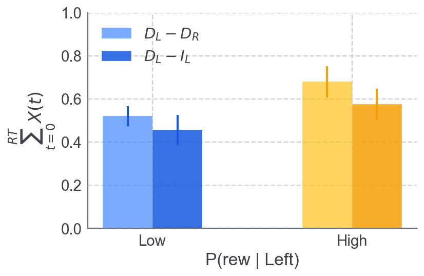
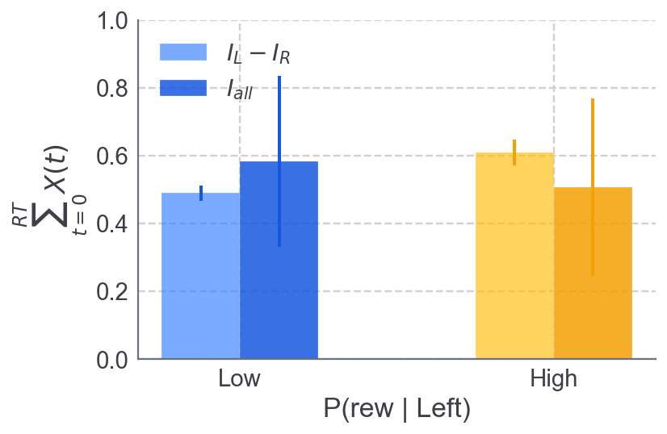
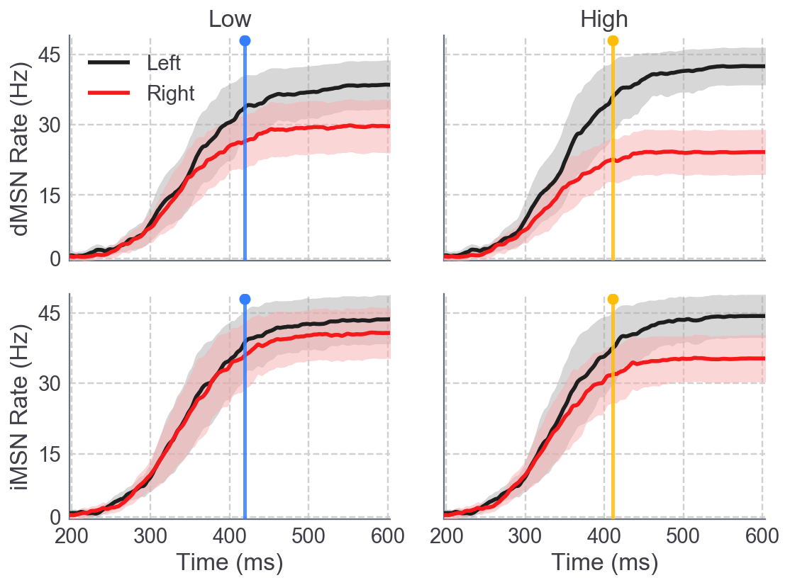
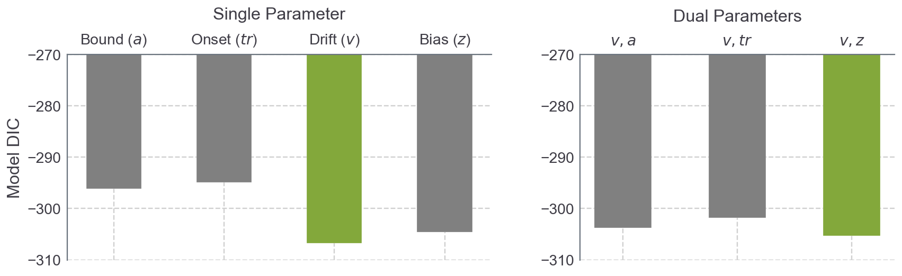

import os, sys
import pandas as pd
import numpy as np
import random
from future.utils import listvalues
from copy import deepcopy
import cbgt.netgen as ng
import cbgt.analyzefx as afx
from cbgt import vis, sim
import matplotlib.pyplot as plt
import seaborn as sns
import warnings
warnings.simplefilter('ignore', np.RankWarning)
warnings.filterwarnings("ignore", module="matplotlib")
warnings.filterwarnings("ignore")
%matplotlib inline
clrs = ['#347fff', '#febe08']
eclrs = ['#1657de', '#f5a005']
rc = {'font.family': u'sans-serif',
'font.sans-serif': [u'Helvetica', u'Arial', u'sans-serif'],
'lines.solid_capstyle': u'butt'}
sns.set(style='ticks', font='Helvetica', rc=rc, font_scale=1.4)
# splot.style(theme='safari-day', grid=True, spines=True, fscale=1.4, figsize=(6., 3.5))
# bdf = pd.read_csv("/Users/kyle/demo_cbgt_bdf.csv")
Global Params#
parentDir = 'cbgtDemoTEST'
savedir = os.path.join(os.path.expanduser('~'), parentDir)
if not os.path.isdir(savedir):
os.mkdir(savedir)
BaseStim = 0
Stim = 2.54
Dynamic = 30.0
Choices = 2
rampingCTX = True
popscale = .3
Start=200
presetLow = ng.set_post_learning_weights(dMSN=[1.01, 0.99], iMSN=[1.0,1.0])
presetHi = ng.set_post_learning_weights(dMSN=[1.03, 0.98], iMSN=[1.0,1.0])
presets = [presetLow, presetHi]
conds = ['low', 'high']
condABC = ['a', 'b']
cond12 = [1, 2]
savedirs = [os.path.join(savedir, c) for c in conds]
saveLow, saveHi = savedirs
saveTest=os.path.join(savedir, 'test')
presetDict = dict(zip(conds, presets))
condOrder = dict(zip(conds, condABC))
condLevel = dict(zip(conds+['test'], cond12+[0]))
Efficacy sampling f(x) for individual networks#
def get_sampling_params(scale=.05):
CxSTR = 0.2
CxTh = 0.03
CxFSI = 0.165
D1STR_GPi = 1.10 #1.07
D2STR_GPeP = 1.65
STN_GPeP_A = 0.07
STN_GPeP_N = 4.01
STN_GPi = 0.0324
GPi_Th = 0.067
ThSTR = 0.34
ThCx = 0.02
mu = dict(Cx={'STR':CxSTR, 'Th':CxTh, 'FSI':CxFSI},
Th={'STR':ThSTR, 'Cx':ThCx},
D1STR={'GPi': D1STR_GPi},
D2STR={'GPeP': D2STR_GPeP},
STN={'GPi': STN_GPi},
GPi={'Th': GPi_Th})
sd = {i:{j: mu[i][j]*scale for j in list(mu[i])} for i in list(mu)}
return mu, sd
def sample_network_efficacies(muEff, sdEff, N):
X = {}
nuclei = list(muEff)
for i in nuclei:
targets = list(muEff[i])
X[i] = {}
for j in targets:
X[i][j] = np.random.normal(muEff[i][j], sdEff[i][j], N)
return X
def build_single_network(X, idx=0):
Cx={'STR': X['Cx']['STR'][idx],
'Th': X['Cx']['Th'][idx],
'FSI': X['Cx']['FSI'][idx]}
D1STR={'GPi': X['D1STR']['GPi'][idx]}
D2STR={'GPeP': X['D2STR']['GPeP'][idx]}
STN={'GPi': X['STN']['GPi'][idx]}
GPi={'Th': X['GPi']['Th'][idx]}
Th={'STR': X['Th']['STR'][idx],
'Cx': X['Th']['Cx'][idx]}
return ng.getConEff(Cx=Cx, D1STR=D1STR, D2STR=D2STR, STN=STN, GPi=GPi, Th=Th)
Sample 3 individual networks#
N_subj = 3
sdScale = .05
conProb = ng.getConProb()
muEff, sdEff = get_sampling_params(sdScale)
X = sample_network_efficacies(muEff, sdEff, N=N_subj)
subj_eff_dicts = [build_single_network(X, idx=i) for i in range(N_subj)]
Simulate example trial#
# get conn. efficacies for 1st subject network (idx=0)
idx = 0
conEff_i = subj_eff_dicts[idx]
# set stimulus strength
stim = 2.5
# get preset for "high" reward condition
# (e.g., Cx-dMSN weight scalars)
preset = presetDict['high']
# set save directory
ng.setDirectory(saveTest)
# configure trial and network parameters
np.random.seed(seed=np.random.randint(0,1000))
sweepcount = ng.configureSweep(0, experiment='mc', preset=preset, Start=Start,
popscale=popscale, BaseStim=BaseStim, Choices=Choices,
WrongStim=stim, RightStim=stim, Dynamic=Dynamic,
rampingCTX=True,
conProb=conProb,
conEff=conEff_i)
# compile current configuration and simulate trial
ng.compileAndRunSweepALL(1, 0, 1)
Plot population firing rates#
vis.plot_trial_rates(t=0)
RT: 476.01ms
Acc: Correct
Sample stimulus intensity across trials#
ntrials = 30
stimArray = vis.plot_stim_dist(mu=2.5, sd=.075, clip=(2.45, 2.6), ntrials=ntrials, bins=7)

Simulate full dataset#
5 sampled CBGT networks
3 conditions (Low, Medium, and High reward)
20 trials / condition (see cell above)
bdf_list, rdf_list, ardf_list = [], [], []
msn_idx_list, msn_cond_list = [], []
msn_pops = ['dMSN0', 'dMSN1', 'iMSN0', 'iMSN1']
for cond_ix, cond in enumerate(conds):
bdf_list_c, rdf_list_c, ardf_list_c = [], [], []
preset_c = presets[cond_ix]
savedir_c = savedirs[cond_ix]
if not os.path.isdir(savedir_c):
os.mkdir(savedir_c)
for i, subject_eff in enumerate(subj_eff_dicts):
savedir_ci = os.path.join(savedir_c, str(i))
if not os.path.isdir(savedir_ci):
os.mkdir(savedir_ci)
res_ci = sim.run_cbgt_sweeps(stimArray, preset=preset_c,
rampingCTX=True, savedir=savedir_ci,
cond=cond, ntrials=ntrials, Start=Start,
popscale=popscale, BaseStim=BaseStim,
Dynamic=Dynamic, Choices=Choices,
conEff=subject_eff, conProb=conProb)
bdf_ci = afx.analyze_network_behavior(res_ci, preset_c,
stimArray, cond,
savedir_ci, idx=i,
conEff=subject_eff)
ratedf_ci, avg_ratedf_ci = vis.save_and_plot(res_ci, bdf_ci,
cond=cond, idx=i,
savedir=savedir_ci,
window=None, Start=Start,
trials=[1], getdfs=True)
vis.plot_cond_rtdist(bdf_ci, bins=8,
cond=cond, outdir=savedir_ci,
norm_hist=False)
vis.plot_cor_err_rts(bdf_ci, bins=8,
outdir=savedir_ci,
norm_hist=False)
plt.close('all')
msnDF = ratedf_ci[ratedf_ci.population.isin(msn_pops)].reset_index(drop=True)
msnDF_fname = 'msnRates_allTrials_{}_idx{}.csv'.format(cond, i)
msnDF.to_csv(os.path.join(savedir_ci, msnDF_fname), index=False)
bdf_list_c.append(bdf_ci)
rdf_list_c.append(ratedf_ci)
ardf_list_c.append(avg_ratedf_ci)
msn_idx_list.append(msnDF)
bdf_list.append(pd.concat(bdf_list_c).reset_index(drop=True))
rdf_list.append(pd.concat(rdf_list_c).reset_index(drop=True))
ardf_list.append(pd.concat(ardf_list_c).reset_index(drop=True))
msn_cond_list.append(pd.concat(msn_idx_list).reset_index(drop=True))
msnAll = pd.concat(msn_cond_list).reset_index(drop=True)
bdf = pd.concat(bdf_list).reset_index(drop=True)
ratedf = pd.concat(rdf_list).reset_index(drop=True)
ardf = pd.concat(ardf_list).reset_index(drop=True)
Cond: LOW
Mean CorRT: 394.01 (28.78)
Med CorRT: 371.00
Avg ErrRT: 394.38 (31.60)
P(Left): 0.6522
Cond: LOW
Mean CorRT: 470.46 (31.01)
Med CorRT: 453.01
Avg ErrRT: 483.01 (194.32)
P(Left): 0.8696
Cond: LOW
Mean CorRT: 407.24 (24.69)
Med CorRT: 396.01
Avg ErrRT: 417.01 (34.86)
P(Left): 0.7391
Cond: HIGH
Mean CorRT: 388.96 (21.92)
Med CorRT: 371.00
Avg ErrRT: 400.51 (79.00)
P(Left): 0.9130
Cond: HIGH
Mean CorRT: 449.55 (25.58)
Med CorRT: 421.01
Avg ErrRT: 999.99 (0.00)
P(Left): 1.0000
Cond: HIGH
Mean CorRT: 408.37 (22.47)
Med CorRT: 394.01
Avg ErrRT: 410.01 (74.00)
P(Left): 0.9167
vis.plot_mean_acc_rt(bdf, conds=conds, subject_mean=True, clrs=clrs, eclrs=eclrs)

bdfx = bdf[bdf.acc.isin([0,1])]
gf=sns.FacetGrid(bdfx, hue='acc', row='subj_idx', col='cond', palette={0:'r', 1:'g'}, legend_out=False)
gf.map(sns.distplot, 'rtms', bins=5, kde=False, hist=True, kde_kws=dict(bw=1, shade=True))
gf.axes[0,0].legend()
plt.tight_layout()

bdf = afx.get_cbgt_covariates(bdf, msnAll, conds=conds)
bdf = afx.norm_covariates(bdf.dropna())
vis.plot_striatal_regressors(bdf, msn_type='d', subject_mean=True, conds=conds, clrs=clrs, eclrs=eclrs)

vis.plot_striatal_regressors(bdf, msn_type='i', subject_mean=True, conds=conds, clrs=clrs, eclrs=eclrs)

msnPad = msnAll.fillna(method='pad', axis=1).convert_objects(convert_numeric=True)
msnDFs = [msnPad[msnPad.population==pop].reset_index(drop=True) for pop in msn_pops]
ys, ysErr = afx.get_avgMSN_traces(msnDFs, window=5)
vis.plot_average_msn_rates(ys, ysErr, bdf, ntime=600, ymax=48, lw=2.8, plotRT=True, conds=conds, clrs=clrs, eclrs=eclrs)

def save_hddm_params(m, hddm_savedir, mname='va'):
mname = '{}_stats'.format(mname)
if not os.path.exists(hddm_savedir):
os.mkdir(hddm_savedir)
m.print_stats(os.path.join(hddm_savedir, '{}.txt'.format(mname)))
statdf = m.gen_stats()
statdf = statdf.reset_index()
statdf = statdf.rename(columns={'index': 'param'})
statdf.to_csv(os.path.join(hddm_savedir, '{}_df.csv'.format(mname)))
import hddm
hddm_savedir = os.path.join(os.path.expanduser('~'), 'hddm_fits')
data = bdf.reset_index(drop=True)
bias = True
inform = True
incl = ['z']
dependsCol = 'level'
nsamples = 2500
nburn = 1000
nullm = hddm.HDDM(data, bias=bias, include=incl, informative=inform)
freep = ['a', 't', 'v', 'z', 'va', 'vt', 'vz']
models = {}
for p in freep:
plist = list(p)
nfree = len(plist)
depends = dict(zip(plist, [dependsCol]*nfree))
m = hddm.HDDM(data, depends_on=depends, bias=bias,
include=incl, informative=inform)
models[p] = m
nullm.sample(nsamples, burn=nburn)
save_hddm_params(nullm, hddm_savedir, 'null')
nullm.dic_info
[-----------------100%-----------------] 500 of 500 complete in 8.0 sec
{'DIC': -300.33993876360842,
'deviance': -308.8700764342064,
'pD': 8.5301376705979806}
dics = []
for mname in freep:
m = models[mname]
m.sample(nsamples, burn=nburn)
save_hddm_params(m, hddm_savedir, mname)
dics.append(m.dic)
[-----------------100%-----------------] 2500 of 2500 complete in 69.0 sec
splot.style(figsize=(14,5))
freep = ['a', 't', 'v', 'z', 'va', 'vt', 'vz']
singles = [models[mname] for mname in freep[:4]]
duals = [models[mname] for mname in freep[4:]]
dics1 = dics[:4]
dics2 = dics[4:]
bestSingle = np.argmin(dics1)
bestDual = np.argmin(dics2)
# uncomment for delta DIC
# dics1 = [mm.dic - nullm.dic for mm in singles]
# dics2 = [mm.dic - nullm.dic for mm in duals]
lbls1 = ['Bound ($a$)','Onset ($tr$)','Drift ($v$)','Bias ($z$)']
lbls2 = ['$v,a$', '$v,tr$', '$v,z$']
clrs1 = ['Gray']*4
clrs2 = ['Gray']*3
clrs1[bestSingle] = 'g'
clrs2[bestDual] = 'g'
import matplotlib.gridspec as gridspec
f = plt.figure(figsize=(14,4))
gs = gridspec.GridSpec(1, 2, width_ratios=[1.35,1], wspace=.24, top=.8)
ax1 = plt.subplot(gs[0])
ax2 = plt.subplot(gs[1])
_ = ax1.bar(np.arange(4), dics1, color=clrs1, width=.5)
_ = ax2.bar(np.arange(3), dics2, color=clrs2, width=.5)
ax1.set_xticks(np.arange(4))
ax2.set_xticks(np.arange(3))
ax1.set_xticklabels(lbls1)
ax2.set_xticklabels(lbls2)
ymax = np.round(np.max(dics)*.0001, 2)*10000 + 30
ymin = np.round(np.min(dics)*.0001, 2)*10000 - 10
for ax in [ax1,ax2]:
ax.set_ylim(ymax, ymin)
ax.invert_yaxis()
ax.xaxis.set_label_position("top")
sns.despine(top=False,bottom=True,ax=ax)
ax1.set_ylabel('Model DIC')
# ax1.set_ylabel('$\Delta$ DIC')
ax1.set_xlabel('Single Parameter', labelpad=12)
ax2.set_xlabel('Dual Parameters', labelpad=12)
plt.tight_layout()
# fname = os.path.join(savedir, 'hddm/modelDICs.png')
# plt.savefig(fname, dpi=600)

import itertools
Xs = ['nD_lrdiff_sum', 'nDI_ldiff_sum', 'nI_LR_mean']
combos = [list(s) for s in list(itertools.combinations(Xs, 2))]
formulas = [["v ~ {}:C(level)".format(X1), 'a ~ {}:C(level)'.format(X2)] for (X1, X2) in combos]
data = bdf.reset_index(drop=True)
interact = True
group_reg = True
bias = False
incl=['z']
bias=True
model_ids = np.arange(N)
models = {}
for mID in model_ids:
reg_formula = formulas[mID]
models[mID] = hddm.HDDMRegressor(data, reg_formula, bias=bias, include=incl,
keep_regressor_trace=True,
group_only_regressors=group_reg)
for mID in model_ids:
print('\nModel ID: {}\n'.format(mID))
m = models[mID]
m.sample(2000, burn=1200)
statdf = m.gen_stats()
statdf['modelID'] = mID
statdf['DIC'] = m.dic_info['DIC']
statdf['deviance'] = m.dic_info['deviance']
statdf['pD'] = m.dic_info['pD']
statdf = statdf.reset_index()
statdf = statdf.rename(columns={'index':'param'})
#statdf = split_param_col(statdf, param_reg)
print('\nM{} DIC: {}'.format(mID, int(m.dic_info['DIC'])))